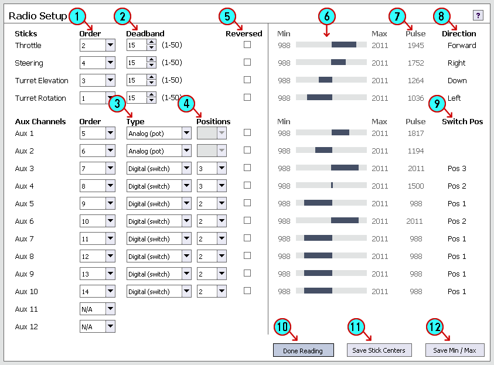
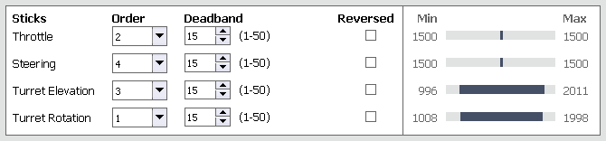

Radio Setup
Setting up your radio correctly is the most important requirement for your TCB to operate correctly. If the TCB has the wrong channel order, or doesn't know the end-points of your sticks,
or the type of aux channels you have, it will not function as expected, if at all. In fact, if you experience strange behavior from the TCB, one of the first things to check is that you have
correctly set up the radio.
For a video demonstration of the complete Radio Setup process, see the Radio page on the Open Panzer Wiki.
General Information
Intro
The TCB is quite literally a small but powerful computer that controls every aspect of your model. With the Radio setup features of the OP Config software, the TCB can be programmed to map virtually any channel
of your radio to any function on the TCB. From starting the engine, to firing the cannon, to changing the turn mode or adjusting acceleration physics in real time, dozens of features can
be applied to any position of any channel you want. For this reason it is important to note you do not need an advanced computer radio, nor do you need a radio with multiple
model memories. Those are great features to have in a radio but you will not need them for the TCB. If you have two TCBs installed in two very different models, you can still use the same transmitter
with the same settings to control them both, since all the unique configuration and channel mappings will be stored in the TCB itself.
What you will soon realize that you do want, however, is a radio transmitter with a lot of switches and knobs to control all the many possible advanced features of the TCB. Radio transmitters
with lots of switches and knobs tend to be the same transmitters with advanced configuration options and multi-model memories. That's fine, but the point is, you do not need to do advanced programming in
your transmitter or create complicated mixes to enjoy the full features of the TCB. In fact, unless you know what you are doing, we recommend you start with a clean slate as it concerns your
transmitter: remove any channel mixing, set end-points to their normal range (+/- 100%), set all trims to center, set all sub-trims to zero, and clear any channel reversing.
RC Channel Basics
Although you don't really need to know this, it can help make sense of some of the numbers you might see below. The position, or value, of any RC channel - for example let's say the throttle stick -
is traditionally represented by a number from approximately 1000 to 2000, with 1500 being stick centered. These numbers don't have to be precise. Due to imprecise tolerances your stick-centered value may
be 1497 or 1512 or some number close to 1500 but not exactly 1500. That is normal. Likewise, your stick may travel below or beyond 1000 and 2000 - maybe it will go from 950 to 2030. But those are the rough ranges that we will typically see.
In the past these numbers represented the literal length in time in micro-seconds of the pulses sent by the transmitter to the receiver for each channel. With today's digital equipment that is
no longer necessarily the case, but we still use the same convention that an RC channel can typically vary in value from 1000 ~ 2000. A stick on your transmitter could be set to any number in between those
two extremes. On the other hand, a 2-position switch on your transmitter would only have two possible values of 1000 and 2000. Got it? Ok, enough of the history lesson!
Number of Channels
The TCB is compatible with several types of receivers - those that output channel data by PPM, and those that implement a digital serial protocol (presently SBus and iBus are supported).
You can read more about these types of receivers on the
Open Panzer Wiki - Receiver page, but the important thing to know is that in PPM mode the TCB can only read up to a max of 8 channels,
whereas SBus can carry up to 16 channels and iBus up to 14. Of course, your transmitter may not be capable of sourcing the full number of possible channels. Many receivers will probably still send data
for unused channels up to the max they are capable of, but the value of those channels will never change if you can't assign them to a control on your transmitter.
We will have the option of telling the TCB to ignore unused channels if that is the case.
At a bare minimum, the TCB must be able to read 4 channels mapped to the two transmitter sticks. PPM and serial receivers transmit channel information as a stream of data, one channel value after
another. But depending on the manufacturer of your radio the channels may be sent in a different order, and there is no industry standard. We will need to tell the TCB which channel number
belongs to which stick.
Sticks
Although the TCB is flexible enough to accommodate any arrangement you may prefer, the general assumption in these guides is that you will devote one stick to tank movement - forward/reverse and
left/right. The second stick is assumed to be the "turret stick" and will control the turret left/right rotation and the barrel up/down movement. Which of these sticks is the left stick
and which is the right is completely up to you. When setup this way, the turret stick is also able to be used as a 9-position switch for triggering various functions (the 9 positions are the
4 corners, the 4 ends, and centered). You do not have to use the turret stick in this way, you are free to trigger functions with aux channels instead. But if you decide to setup your radio
in a non-traditional manner such that the two turret functions are not assigned to the same stick, then Turret Stick Triggers will probably not work. More information about functions
and triggers can be found on the Functions tab.
Aux Channels
An Aux channel is any channel other than the 4 channels associated with the two sticks. At most you can have up to 12 Aux channels with an SBus receiver, 10 Aux channels with an iBus receiver,
or 4 Aux channels with a PPM receiver: assuming your transmitter is also capable of transmitting and controlling those extra channels. Aux channels can represent switches, knobs, or levers on
your transmitter. If switches they may have 2, 3 or 6 positions. We will need to inform the TCB about the nature of each of these channels so it will know what to expect. The type of
Aux channel will also dictate what kinds of functions it can be mapped to (see the Functions tab).
Radio Setup
When you first open the OP Config program you will see several settings on the Radio tab which you can adjust manually. However, the best way to setup your radio is to:
1) Plug your receiver into the TCB's RADIO port (a male-to-male servo cable works best)
2) Turn on your transmitter
3) Plug your TCB into your computer with a USB cable
4) Connect to the TCB
5) Click the Read Radio button near the bottom of the Radio tab
Now the TCB will start streaming radio data to the OP Config program. Information about each channel will suddenly appear to the right of the options, updated in real time.
We will use the information on the right side of the screen to help us adjust the settings on the left side correctly. This is an example of what your screen might look like during radio streaming:

- Channel Order: As mentioned before, channel data is sent to the TCB one channel after another in a "string." But initially we won't know if channel #1 in the string belongs to the throttle channel,
or the turret rotation stick, or some other channel, though obviously it is important for the TCB to know what is what. The best way to assign the correct channel order to the sticks, is to move a single stick back and forth while watching the screen - one of the blue bars next to a channel will
also move back and forth. For example, if you move the throttle stick up and down, but notice the only blue bar moving is the one next to the Steering channel, then you need to assign the channel number
of the Steering channel to the Throttle channel instead. Continue adjusting the channel orders for the 4 sticks until the blue bars next to each channel match the actual stick function on your transmitter.
Channel order is really only important for the 4 stick channels - the Aux channels can be in any order. But you may not have 12 Aux channels available to you from your radio. In that case,
you may wish to select N/A (not available) in the Channel Order for any unused Aux channels. The TCB will ignore these channels, and they also won't show up as possible function
triggers on the Functions tab.
- Deadband: The 4 stick channels have an optional deadband setting. The radio signal is rarely ever completely steady even when you aren't touching the sticks. If the TCB responded to every
small change in the signal, you may find your model creeping about when you thought it should be stopped. The Deadband setting is a way to overcome the issue of an unsteady signal. Any stick movement less than
the deadband amount will be ignored. This number should be small, but greater than 0. Don't set it any larger than you need to - the greater the deadband, the more you will have to move your stick on
purpose to get anything to happen. Watching the Pulse column while the radio is streaming will give you a good idea of the variability of your signal. PPM receivers will exhibit much more
jitter than digital serial receivers.
- Aux Channel Type: The TCB recognizes two types of Aux channels which it calls Analog or Digital. An example of an analog channel is a knob or lever. For that matter the sticks
are also examples of "analog" channels but the TCB already assumes that. A digital Aux channel is any kind of switch. Make sure you specify the correct type for each Aux channel. Again, you can watch
the blue bars on the right side of the screen as you manipulate the switches and knobs on your transmitter to identify the type of each channel.
- Aux Channel Positions: If an Aux channel is specified as Analog, the Position setting will be hidden because an analog channel has an essentially unlimited number of positions. In the
example above, Aux channels 1 & 2 are Analog so have no Position setting available. But if your Aux channel is a switch, or in other words, a Digital channel, you need to tell the TCB whether
it is a 2-position switch or a 3-position switch. Support for switches with greater number of positions is not presently implemented. It is also important to remember that a 3-position switch will have 3
positions, and a 2-position switch will have 2 positions. But of course! That sounds very logical. However it can cause some confusion when we look at the current switch position in item #9 below.
- Channel Reversing: Although you could use the channel reversing feature on your transmitter, there is an advantage to letting the TCB take care of it instead: you can leave your transmitter settings unchanged
while still using it for multiple different models. Rather than trying to remember which model had the reversed turret direction and constantly changing the settings on your transmitter, or creating multiple
model memories if your transmitter even has that option, just save the setting in the TCB and forget about it. To determine if you need to reverse a channel, we can again utilize the information on the right
side of the screen - see items #8 & #9 below.
- Channel Movement Indicator: As you move any stick, switch or knob on your transmitter, the blue bar on the movement indicator will reflect the current channel value. The numbers at either end of
the blue bar are the minimum and maximum values detected. These min and max values are important, see #12 below for more.
- Channel Pulse: This is the current pulse value of each channel. As you move a stick, the pulse will change. If you leave the sticks untouched, you may still see the pulse changing rapidly, this
is jitter. Notice how much jitter you have and set the Deadband value slightly greater than the jitter amount.
- Current Stick Direction: When you move a stick, the text in the direction column will change. This can help you determine if you need to reverse any channels. For example, if you hold the steering stick
to the right but the Direction text says "Left", then you know you need to reverse that channel (by checking the Reversed checkbox).
- Current Switch Position: Similar to the Current Stick Direction, the Current Switch Position is a textual description of the current position of each switch. There is no description for
analog Aux channels because they can have any position possible. Notice something interesting in the example above: Aux Channel 4 and Aux Channel 6 are both listed as being in "Pos 2" even though
from the other information we can see that Aux Channel 4 has a value of 1500 (exactly centered) and Aux Channel 6 has a value of 2011 (all the way to one end). How can this be? The reason has to do
with the number of positions available for each channel. Notice that Aux Channel 4 is a 3-position switch. That means it can be in position 1, 2, or 3 and position 2 will be dead center. Aux Channel 6
is only a 2-position switch. It can only be in position 1 or 2 and position 2 will be all the way to one extreme. The point is, "Position 2" may mean something different for each channel depending
on how many positions that channel has.
- Read Radio Button: When disconnected from the TCB, this and the other two buttons beside it will be disabled. After connecting, this button will be enabled and the text will say Read Radio.
If you click on this button and the TCB can detect the radio, radio streaming will begin. This button will become depressed (darker in color) and the text will change to Done Reading as you
can see in the screenshot above. If you click on the button while it says Done Reading, radio streaming will stop. Note: If you wish to read the radio, remember to turn the transmitter on before connecting
to the TCB because the TCB needs to run a detection routine that will not be available to it once it begins communicating with the PC. If your transmitter is on but clicking the Read Radio button
gives you an error message about the radio being absent, that is probably the reason. Disconnect from the TCB (but leave the USB cable plugged in to provide power), turn on your transmitter, then reconnect.
- Save Stick Centers Button: As mentioned before, the center value of a typical RC radio channel should be 1500, but in practice, it is rarely ever precisely that. It wouldn't be a good idea for the
TCB to assume 1500 means "stick centered" if in fact that was not the case. It could lead the TCB to moving the tank forward when the user thought it should be stopped. For that reason it is important
for the TCB to know the exact value of the sticks when they are centered. To record this information, set your sticks to center and leave the radio untouched. Click the Save Stick Centers Button.
A message will appear, and when you click Ok the center values will be recorded.
- Save Min/Max Button: It is also important for the TCB to know the full range of each channel. Will it be 1000 to 2000? Or will it be 988 to 2011 as shown in the example above? Each
radio will be slightly different. To save the min/max values for each channel, click the button and read the message that will appear. In this mode, each channel's min and max values will be cleared.
You should move every stick, knob and switch on you transmitter. As you move the controls, you will see the blue bars beginning to fill in on both sides of center, and the min and max values increasing.
In the example below the turret rotation and elevation sticks have been moved to their maximums but the throttle and steering stick have not yet been touched. Continue moving every control until the min
and max values no longer change and the blue bars no longer increase in size. At this point, click the Save Min/Max button again to complete the save operation. Note: As also shown in the example
below, the min and max values may be reached before the blue bars fill in completely to the ends of the movement indicator. This is normal.

Save Your Setup!
When you have assigned every channel order, type, and switch position, and you have saved the stick centers as well as each channel's min and max values, then you can stop streaming the radio (click the Done Reading button).
But now these settings only reside temporarily in the OP Config program - the TCB doesn't know anything about them! Make sure you click the Write to Device button to send all the settings to the TCB.
You may also want to save a settings file to your hard-drive.